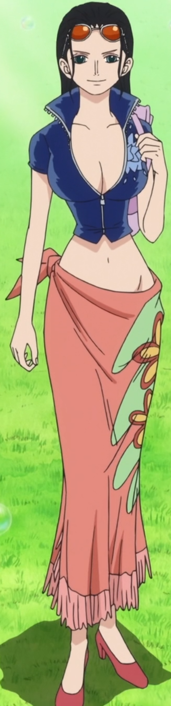

Nico Robin (ニコ・ロビン, Niko Robin?) est un personnage du manga One Piece.
Nico Robin est une archéologue qui apparaît pour la première fois dans la série sous les traits du bras droit de Crocodile, l'un des puissants grands corsaires. Elle est l'antagoniste secondaire de la saga Alabasta.
voix japonaise :Yuriko Yamaguchi
voix francaise :Fabienne Loriaux
fruit du demon :Hana Hana no Mi
prime :130 milLions berry
